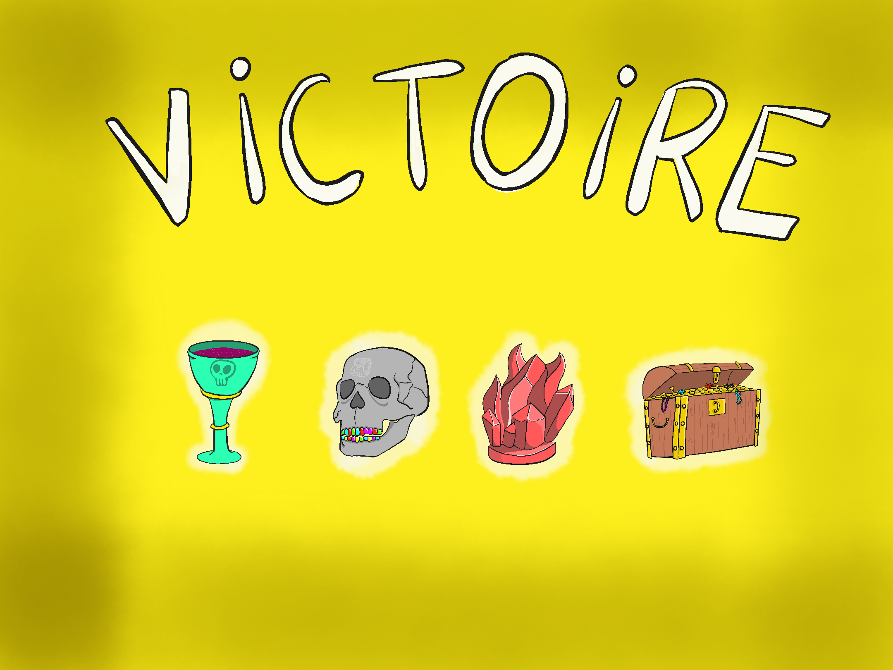
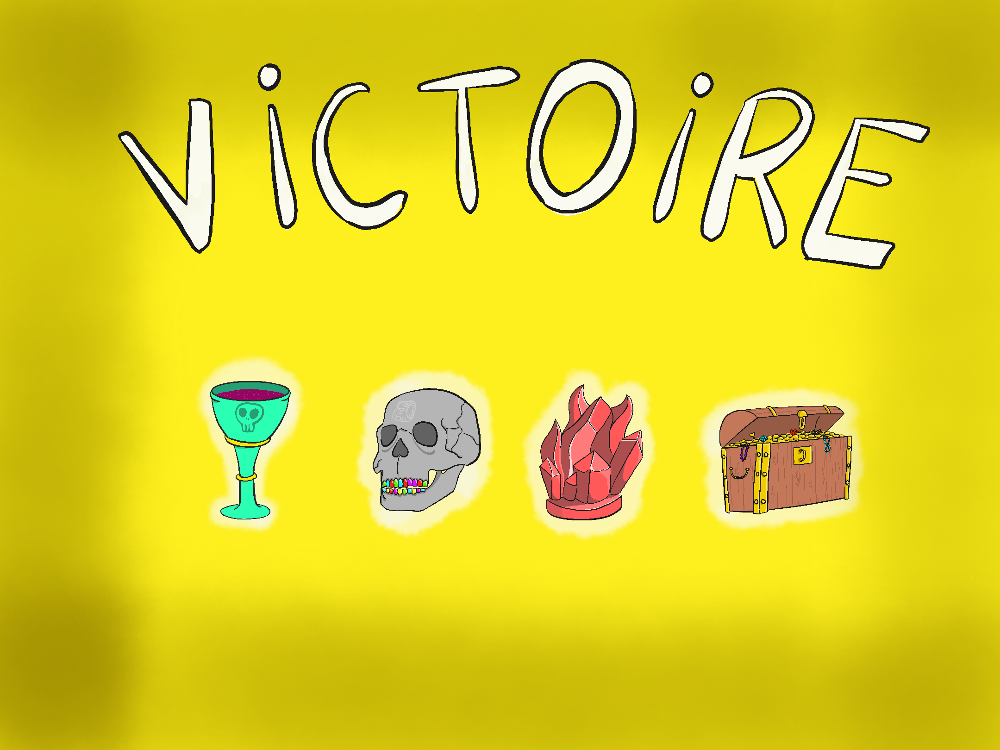

Mes projets
 Forest Quest - Programmation Fonctionelle Avancée (Ocaml)
Forest Quest - Programmation Fonctionelle Avancée (Ocaml)
voir le sujet
voir mon projet
Images et détails du projet
En binôme avec Fabio ALVES
GeometryDash-Like. On y joue un petit bonhomme qui doit avancer dans plusieurs niveaux à travers la jungle,
tout en esquivant les pièges (piques, trous, saut mal calculé...).
Menu de selection des niveaux, animation du personnage et des décors.
Implémentation de musiques et de sons.
note: /20
 Frogger - Introduction Programmation Orientée (Java)
Frogger - Introduction Programmation Orientée (Java)
voir le sujet
voir mon projet
voir mon rapport
Images et détails du projet
En binôme avec Nassim ARIFETTE
Adapatation du jeu d'arcade Frogger. Une petite grenouille doit avancer le plus loin possible,
tout en prenant gare aux nombreux dangers...
Implémentation de différentes possibilité de Game Over: noyade et prédateur.
Partie chronométrée avec affichage du score à la fin. Implémentation de sons.
note: 16/20


 L'île interdite - Programmation Orientée et Génie Logiciel (Java)
L'île interdite - Programmation Orientée et Génie Logiciel (Java)
voir le sujet
voir mon projet
voir mon rapport
Images et détails du projet
En binôme avec Nassim ARIFETTE
Adaptation du jeu de société éponyme de Matt Leacock. Une équipe de 4 aventuriers arrivent sur une île déserte. Ils doivent s'entraider afin de trouver tous les mysterieux artefacts que renferme ce lieu et s'échapper par helicoptère au plus vite. Cependant le temps joue contre eux: l'eau monte et les dangers sont nombreux...
note: 20/20
 
